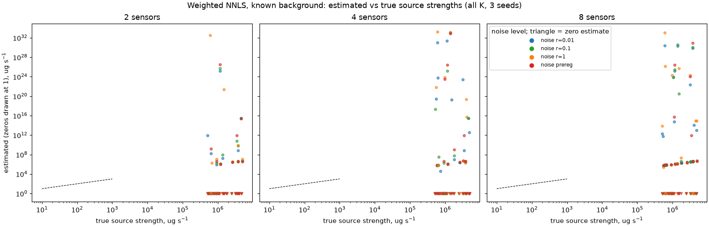

6 E03 Static source-strength inverse (known wind)
Question. With fixed (non-optimised) sensors, known wind and a perfect model, can a weighted non-negative inverse recover source strengths? Evidence label: exploratory; a negative result. Current status: rerun at a_ref = 1 g s⁻¹ (A1); the tables below are from that rerun (commit 04bbd28).
Headline. The weighted sensitivity matrix is rank-deficient (tolerance 1e-8) in all 648 fits, at both the old and the new source scale. Rank does not depend on scale, so the cause is structural: ≤ 8 fixed sensors and a 24 h window cannot separate the sources. For K = 2, two of three seeds put every sensor outside the plumes. The lever is sensor placement (E06/E07) and wind change (E05), not the estimator.
Simulated passive tracer only; nothing here is evidence about ambient PM2.5. Every number below is generated from tables/e03-inversion.csv, tables/e03-estimates.csv, tables/e03-validity.csv and tables/e03-nonidentifiable.json, written by scripts/e03_inversion.py (one registered run) and rendered by tables/make_e03_md.py.
6.1 Design
- Perfect model: the response matrix is built from the same transient solver, winds and spin-up as the hidden truth, so this measures the inverse problem only, not model mismatch. Source locations and shapes are known; the unknowns are the source strengths (nonnegative) and, in one arm, a constant background.
- Smoke scale (32² grid, 12 h spin-up, one 24 h window of hourly readings), not the preregistered 64² / 60-day design. Three replicate seeds per cell; each seed has its own truth and its own noise stream.
- Sources K ∈ {2, 4, 8}, sensors ∈ {2, 4, 8} chosen by a fixed deterministic rule from the admissible candidate sites (not optimised).
- Noise levels. Three data-relative levels set σ₀ to a fixed fraction r of the rms noise-free anomaly at the chosen sensors, with per-site σ varying by a factor up to 9 (heteroscedastic, so weighting is not a no-op). A fourth level is the preregistered homoscedastic noise (5% of the median background-dominated truth), read through the leak-checked inference view; there weighting and no weighting are mathematically identical.
- Estimators: unweighted NNLS, noise-weighted NNLS, noise-weighted ridge NNLS (one fixed relative ridge, chosen before any run, not tuned); each with the background known (subtracted) or estimated as a sign-free nuisance coefficient.
- Scores: source relative RMSE (‖â − a‖/‖a‖), field RMSE over the whole grid and window against the noise-free truth anomaly (compared with the RMSE of the all-zero estimate), measurement fit (rms of residual over true σ; about 1 when the model and noise are consistent), and identifiability diagnostics (rank and conditioning of the weighted sensitivity matrix at relative tolerance 1e-8, and the fraction of sources whose local Cramér–Rao standard deviation is at most half the true strength). The CRB is an unconstrained local approximation. No pass/fail threshold on error was preregistered for this experiment, so none is applied; outcomes are described, not graded.
6.2 Validity checks on the operator
| scenario | check | value |
|---|---|---|
| K2_s0 | G,F reproduce hidden truth anomaly on the whole grid (rel err) | 4.9e-06 |
| K2_s0 | G equals sensitivity.scenario_response_matrix (max abs diff) | 0 |
| K2_s1 | G,F reproduce hidden truth anomaly on the whole grid (rel err) | 6.9e-06 |
| K2_s2 | G,F reproduce hidden truth anomaly on the whole grid (rel err) | 7.4e-06 |
| K4_s0 | G,F reproduce hidden truth anomaly on the whole grid (rel err) | 4.9e-06 |
| K4_s1 | G,F reproduce hidden truth anomaly on the whole grid (rel err) | 8.4e-06 |
| K4_s2 | G,F reproduce hidden truth anomaly on the whole grid (rel err) | 6.9e-06 |
| K8_s0 | G,F reproduce hidden truth anomaly on the whole grid (rel err) | 8.7e-06 |
| K8_s1 | G,F reproduce hidden truth anomaly on the whole grid (rel err) | 3.8e-06 |
| K8_s2 | G,F reproduce hidden truth anomaly on the whole grid (rel err) | 5.9e-06 |
6.3 Main results (weighted NNLS, background known; mean [min, max] over three seeds)
| K | sensors | noise level | SNR (rms signal / sigma0) | rank of weighted G | source relative RMSE | field RMSE / zero-estimate RMSE | measurement fit (rms of residual / sigma) | CRB fraction | outcome (3 seeds) |
|---|---|---|---|---|---|---|---|---|---|
| 2 | 2 | r=0.01 | 0.71 | 1 [1, 1] | 0.99 [0.96, 1] | 0.94 [0.83, 1] | 0.93 [0.81, 1] | 0 | 3 non_identifiable |
| 2 | 2 | r=0.1 | 0.071 | 1 [1, 1] | 3.6e+03 [1, 1.1e+04] | 3.6e+03 [1, 1.1e+04] | 0.91 [0.81, 1] | 0 | 3 non_identifiable |
| 2 | 2 | r=1 | 0.0071 | 1 [1, 1] | 7.3e+25 [1, 2.2e+26] | 1e+26 [1, 3e+26] | 1 [0.95, 1.1] | 0 | 3 non_identifiable |
| 2 | 2 | prereg | 0.0064 | 1 [1, 1] | 4.9e+04 [1, 1.5e+05] | 4.9e+04 [1, 1.5e+05] | 1.1 [1.1, 1.1] | 0 | 3 non_identifiable |
| 2 | 4 | r=0.01 | 0.5 | 1 [1, 1] | 2.3e+24 [1.3e+02, 7e+24] | 3.2e+24 [1.3e+02, 9.5e+24] | 0.99 [0.94, 1] | 0 | 3 non_identifiable |
| 2 | 4 | r=0.1 | 0.05 | 1 [1, 1] | 1 [1, 1] | 1 [1, 1] | 0.96 [0.91, 1] | 0 | 3 non_identifiable |
| 2 | 4 | r=1 | 0.005 | 1 [1, 1] | 3.4e+26 [1, 1e+27] | 4.7e+26 [1, 1.4e+27] | 0.96 [0.91, 1] | 0 | 3 non_identifiable |
| 2 | 4 | prereg | 0.0045 | 1 [1, 1] | 4.9e+04 [1, 1.5e+05] | 4.9e+04 [1, 1.5e+05] | 1 [1, 1.1] | 0 | 3 non_identifiable |
| 2 | 8 | r=0.01 | 27 | 1 [1, 1] | 5.6e+23 [2.2e+07, 1.7e+24] | 7.7e+23 [2.2e+07, 2.3e+24] | 1 [1, 1.1] | 0 | 3 non_identifiable |
| 2 | 8 | r=0.1 | 2.7 | 1 [1, 1] | 7.1e+13 [0.96, 2.1e+14] | 6.6e+13 [0.83, 2e+14] | 0.98 [0.97, 1] | 0 | 3 non_identifiable |
| 2 | 8 | r=1 | 0.27 | 1 [1, 1] | 2.3e+26 [1, 7e+26] | 3.2e+26 [1, 9.6e+26] | 0.96 [0.9, 1] | 0 | 3 non_identifiable |
| 2 | 8 | prereg | 0.24 | 1 [1, 1] | 1.1e+17 [1, 3.2e+17] | 9.1e+16 [1, 2.7e+17] | 1 [1, 1] | 0 | 3 non_identifiable |
| 4 | 2 | r=0.01 | 32 | 1.7 [1, 2] | 2.7e+18 [0.19, 8.2e+18] | 2.1e+18 [0.19, 6.2e+18] | 0.99 [0.93, 1.1] | 0 | 3 non_identifiable |
| 4 | 2 | r=0.1 | 3.2 | 1.7 [1, 2] | 8.9e+18 [0.19, 2.7e+19] | 6.8e+18 [0.19, 2e+19] | 1 [0.97, 1.1] | 0 | 3 non_identifiable |
| 4 | 2 | r=1 | 0.32 | 1.7 [1, 2] | 0.73 [0.2, 1] | 0.73 [0.2, 1] | 1.1 [0.97, 1.2] | 0 | 3 non_identifiable |
| 4 | 2 | prereg | 0.68 | 1.7 [1, 2] | 5.2e+19 [0.22, 1.5e+20] | 3.9e+19 [0.22, 1.2e+20] | 0.99 [0.92, 1.1] | 0 | 3 non_identifiable |
| 4 | 4 | r=0.01 | 38 | 1.7 [1, 2] | 5.2e+24 [6.7e+12, 1.6e+25] | 3.1e+24 [6.9e+12, 9.2e+24] | 0.99 [0.93, 1] | 0 | 3 non_identifiable |
| 4 | 4 | r=0.1 | 3.8 | 1.7 [1, 2] | 2.5e+18 [22, 7.6e+18] | 1.9e+18 [22, 5.8e+18] | 0.94 [0.83, 0.99] | 0 | 3 non_identifiable |
| 4 | 4 | r=1 | 0.38 | 1.7 [1, 2] | 6.2e+14 [0.92, 1.9e+15] | 6.4e+14 [0.79, 1.9e+15] | 1 [0.97, 1] | 0 | 3 non_identifiable |
| 4 | 4 | prereg | 0.59 | 1.7 [1, 2] | 4.3e+19 [0.22, 1.3e+20] | 3.3e+19 [0.22, 9.8e+19] | 0.99 [0.92, 1.1] | 0 | 3 non_identifiable |
| 4 | 8 | r=0.01 | 39 | 2 [1, 3] | 2.7e+18 [1.5e+05, 8.2e+18] | 2.1e+18 [1.4e+05, 6.2e+18] | 1 [0.95, 1] | 0 | 3 non_identifiable |
| 4 | 8 | r=0.1 | 3.9 | 2 [1, 3] | 4.8e+18 [0.13, 1.4e+19] | 3.6e+18 [0.12, 1.1e+19] | 0.99 [0.94, 1] | 0 | 3 non_identifiable |
| 4 | 8 | r=1 | 0.39 | 2 [1, 3] | 2.4e+19 [0.25, 7.1e+19] | 1.6e+19 [0.24, 4.7e+19] | 0.97 [0.92, 1] | 0 | 3 non_identifiable |
| 4 | 8 | prereg | 0.55 | 2 [1, 3] | 4.3e+19 [0.17, 1.3e+20] | 3.3e+19 [0.16, 9.8e+19] | 0.99 [0.94, 1] | 0 | 3 non_identifiable |
| 8 | 2 | r=0.01 | 40 | 1.7 [1, 2] | 1.5e+08 [24, 4.5e+08] | 1.5e+08 [27, 4.4e+08] | 0.99 [0.92, 1] | 0 | 3 non_identifiable |
| 8 | 2 | r=0.1 | 4 | 1.7 [1, 2] | 1.5e+08 [0.93, 4.5e+08] | 1.4e+08 [0.83, 4.3e+08] | 0.9 [0.86, 0.92] | 0 | 3 non_identifiable |
| 8 | 2 | r=1 | 0.4 | 1.7 [1, 2] | 3.2e+02 [0.95, 9.6e+02] | 2.7e+02 [0.82, 8.2e+02] | 1 [1, 1.1] | 0 | 3 non_identifiable |
| 8 | 2 | prereg | 1.3 | 1.7 [1, 2] | 1.3e+08 [0.82, 3.9e+08] | 1.3e+08 [0.87, 3.8e+08] | 1 [0.91, 1.1] | 0 | 3 non_identifiable |
| 8 | 4 | r=0.01 | 32 | 2.3 [1, 3] | 4.3e+25 [1.3, 1.3e+26] | 1.6e+25 [1, 4.9e+25] | 0.99 [0.95, 1.1] | 0 | 3 non_identifiable |
| 8 | 4 | r=0.1 | 3.2 | 2.3 [1, 3] | 4.6e+25 [7.9, 1.4e+26] | 1.8e+25 [8.7, 5.3e+25] | 0.98 [0.93, 1] | 0 | 3 non_identifiable |
| 8 | 4 | r=1 | 0.32 | 2.3 [1, 3] | 5.3e+25 [0.9, 1.6e+26] | 2e+25 [0.89, 6.1e+25] | 0.98 [0.85, 1.1] | 0 | 3 non_identifiable |
| 8 | 4 | prereg | 1.1 | 2.3 [1, 3] | 3.1e+25 [0.89, 9.3e+25] | 1.2e+25 [0.88, 3.5e+25] | 0.99 [0.97, 1] | 0 | 3 non_identifiable |
| 8 | 8 | r=0.01 | 59 | 3.3 [3, 4] | 1.2e+23 [1.3e+17, 2.4e+23] | 4.3e+22 [5.7e+16, 9.2e+22] | 1 [0.96, 1.1] | 0 | 3 non_identifiable |
| 8 | 8 | r=0.1 | 5.9 | 3.3 [3, 4] | 2e+23 [1e+17, 4.5e+23] | 7.4e+22 [4.6e+16, 1.7e+23] | 1 [0.97, 1] | 0 | 3 non_identifiable |
| 8 | 8 | r=1 | 0.59 | 3.3 [3, 4] | 2e+18 [1.3e+08, 5.8e+18] | 5.6e+17 [1.2e+08, 1.5e+18] | 0.98 [0.97, 1] | 0 | 3 non_identifiable |
| 8 | 8 | prereg | 1.9 | 3.3 [3, 4] | 4.3e+23 [0.67, 1.3e+24] | 1.5e+23 [0.52, 4.4e+23] | 1 [0.99, 1.1] | 0 | 3 non_identifiable |
At noise level r=0.01 (mean SNR 30), 0 of 27 weighted known-background fits are full rank with a non-zero estimate.
At noise level r=0.1 (mean SNR 3), 0 of 27 weighted known-background fits are full rank with a non-zero estimate.
At noise level r=1 (mean SNR 0.3), 0 of 27 weighted known-background fits are full rank with a non-zero estimate.
At noise level prereg (mean SNR 0.71), 0 of 27 weighted known-background fits are full rank with a non-zero estimate.
Over all 648 fits, 648 are non-identifiable at relative tolerance 1e-8 and 0 return an all-zero estimate.
Rank of the weighted sensitivity matrix (fits per K x sensors, deficit = K - rank): K=2, n=2: mean deficit 1; K=2, n=4: mean deficit 1; K=2, n=8: mean deficit 1; K=4, n=2: mean deficit 2.3; K=4, n=4: mean deficit 2.3; K=4, n=8: mean deficit 2; K=8, n=2: mean deficit 6.3; K=8, n=4: mean deficit 5.7; K=8, n=8: mean deficit 4.7.
The largest relative error seen is 1.1e+27; values far above 1 are noise amplified along a near-null direction, not recovery.

6.4 Estimator and background comparison
Paired on identical data, restricted to cells where both fits are full rank with a non-zero estimate; a negative change is an improvement.
| noise level | comparison (method minus baseline) | paired cells (full rank, non-zero) | median change in source relative RMSE | cells where method is better |
|---|---|---|---|---|
| r=0.01 | unweighted vs weighted (bg known) | 0 | n/a | n/a |
| r=0.01 | ridge vs weighted (bg known) | 0 | n/a | n/a |
| r=0.01 | bg estimated vs known (weighted) | 0 | n/a | n/a |
| r=0.1 | unweighted vs weighted (bg known) | 0 | n/a | n/a |
| r=0.1 | ridge vs weighted (bg known) | 0 | n/a | n/a |
| r=0.1 | bg estimated vs known (weighted) | 0 | n/a | n/a |
| r=1 | unweighted vs weighted (bg known) | 0 | n/a | n/a |
| r=1 | ridge vs weighted (bg known) | 0 | n/a | n/a |
| r=1 | bg estimated vs known (weighted) | 0 | n/a | n/a |
| prereg | unweighted vs weighted (bg known) | 0 | n/a | n/a |
| prereg | ridge vs weighted (bg known) | 0 | n/a | n/a |
| prereg | bg estimated vs known (weighted) | 0 | n/a | n/a |
6.5 Failures, characterised
| noise level | non_identifiable | rows |
|---|---|---|
| r=0.01 | 162 | 162 |
| r=0.1 | 162 | 162 |
| r=1 | 162 | 162 |
| prereg | 162 | 162 |
Non-identifiable means the rank of the weighted sensitivity matrix is below the number of sources, so the data cannot determine the strengths; the estimate is then one member of a family and its error says nothing about the method. An all-zero estimate means the nonnegativity constraint set every strength to zero, which the protocol counts as a failure. Neither is tuned away.
6.6 Intentionally non-identifiable case
Four sources, two sensors, a single snapshot hour, noiseless. A nonnegative alternative strength vector is constructed along a null direction of the sensitivity matrix.
| quantity | value |
|---|---|
| rank of snapshot sensitivity | 2 |
| sources K | 4 |
| observations | 2 |
| alternative: smallest coefficient (ug/s) | 3.3e+05 |
| alternative vs truth, relative distance | 3.1e+04 |
| alternative: relative data misfit | 1.6e-15 |
| alternative: relative field difference at that hour | 2.6e+04 |
| noiseless NNLS: source relative error | 0.81 |
| noiseless NNLS: relative data misfit | 6.5e-17 |
The alternative reproduces the readings to round-off while differing from the truth, and the whole-field difference shows that a non-identifiable source set does not give a determined field either.
6.7 Limitations
- Smoke scale and perfect model only: no wind, diffusivity, removal or location error, single noise realisation per cell, three seeds, deterministic non-optimised sensor sites. No claim about generality or about the preregistered 64² design.
- The tables use the amended source scale a_ref = 1 g s⁻¹ (A1), chosen after seeing data, so they are exploratory. The data-relative noise levels are chosen so the signal is visible; they are not the preregistered noise, which is reported separately. (Earlier text here describing the preregistered 100 µg s⁻¹ scale is superseded.)
- The estimate is scored in-window on the analysis field, not as a held-out forecast, so it is not the primary endpoint.
- Rank decisions depend on the 1e-8 relative tolerance; badly conditioned but nominally full-rank cells are not identifiable in practice, which the conditioning column shows.
- The ridge strength is a single fixed value; no validation-based selection was run.
- Sources whose plume barely reaches any chosen sensor give near-zero columns of the sensitivity matrix; unregularised NNLS can then assign them enormous strengths for negligible change in the readings. Errors many orders above 1 are this numerical effect, reported as observed and not clipped. The fixed, non-optimised sensor rule and 24 h window may be a main cause; sensor placement is a later experiment and was not varied here.
- The run budget for this experiment was used up, so no redesign (different window, tolerance or sensor rule) was run after seeing these results.
- Findings from these runs stay preliminary.
6.8 Audit outcome (gate-03)
Gate-03 found the code engineering-sound (23 tests pass) but did not clear the baseline for fair placement comparisons: no fit is full rank, so the estimator has no demonstrated recovery regime. It recommended a regime where rank = K is achievable (longer window, optimised sensors or larger source scale), a noise-referenced rank criterion, and validation-only ridge tuning. What changed: the source scale (A1), the noise-referenced practical rank used from E04 on, a prior-referenced ridge (MAP) in E05/E07, and optimised placement (E06/E07). The “identifiable recovery” half of the E03 hypothesis remains untested in this configuration.